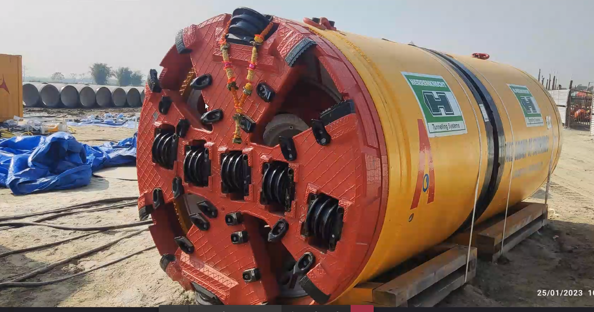
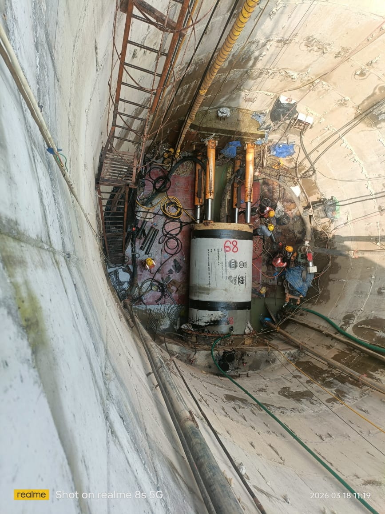

ENGINEERING BELOW THE SURFACE
GODEEPER.
The work that carries progress forward often happens out of sight. We bring it into focus.
↓SCROLL TO EXPLOREWE BUILD
THE UNSEEN.
Below roads, rivers and busy work sites, underground construction asks for a different kind of focus.
ATOZ Infracon Pvt Ltd works with tunnelling equipment, pipe installation and civil construction on site. These photographs offer a closer look at the spaces, machinery and people behind that work.
EXPLORE THE CAPABILITIES ↗
NOTHING
STANDARD.
A look at the core activities visible across our underground construction sites.

ON SITE / ATOZ
REAL WORK.
REAL GROUND.
LOOK
CLOSER.
Swipe or use the controls to move through the machinery, shafts and teams shown in these site photographs.



MACHINES
MOVE EARTH.
PEOPLE MOVE
PROJECTS.
The work is physical, technical and collaborative. Every view from the field is also a view of the teams who make it happen.
ATOZ INFRACON PVT LTD / BELOW THE SURFACE